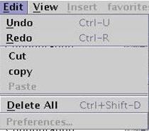

Edit Menu
The Edit menu provides functions related to deleting, undo edits, and redo edits.

The following menu items are included:
Undo - allows users to undo the last eight operations on the selected graph in the Waveform Graphs Tool.
Redo - allows users to redo the last eight operations that were undone on the selected graph in the Waveform Graphs Tool.
Delete All - deletes all waveforms listed in the Waveform Navigator Tool.
Preferences... - allows you to specify how you want the pattern tool to be displayed (for example, with regard to colors and fonts).